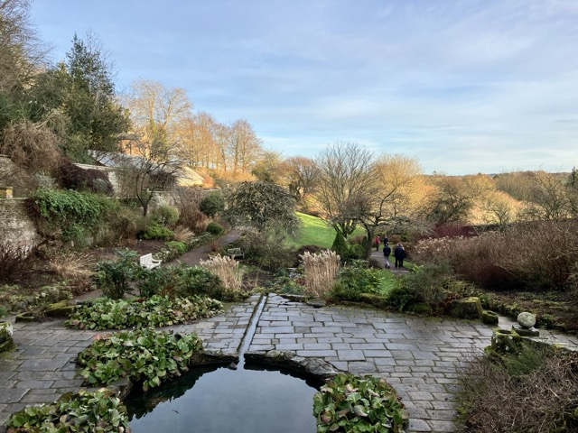
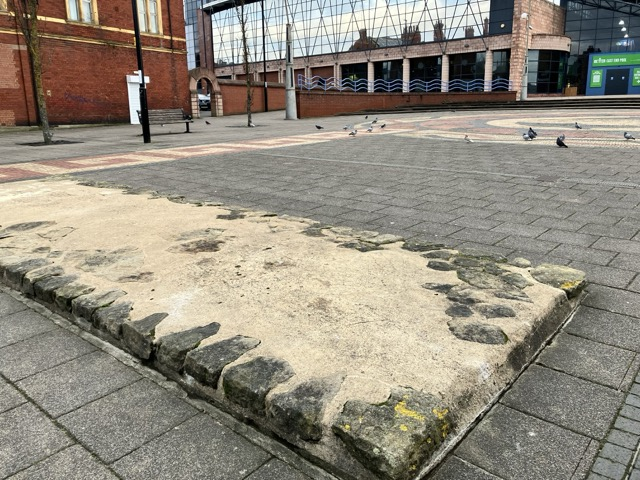
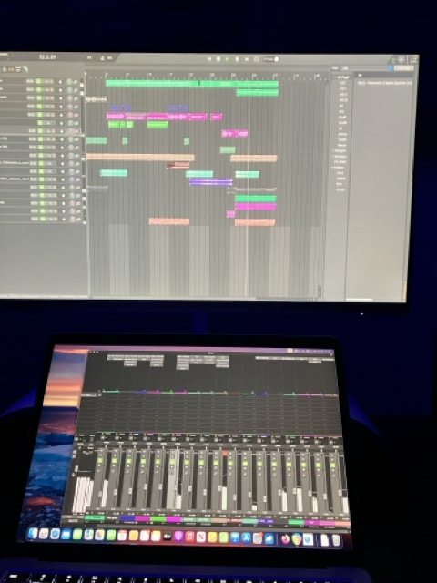
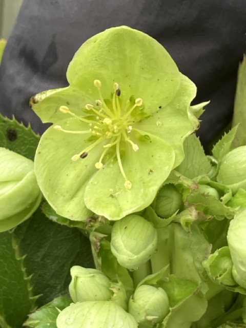
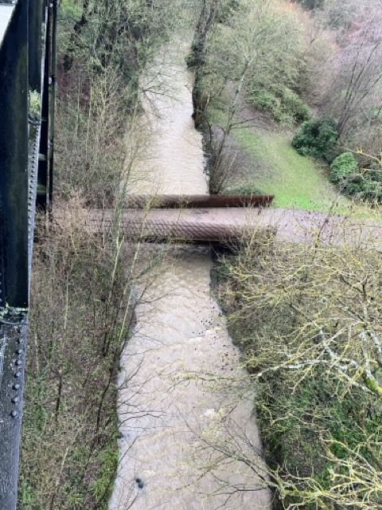
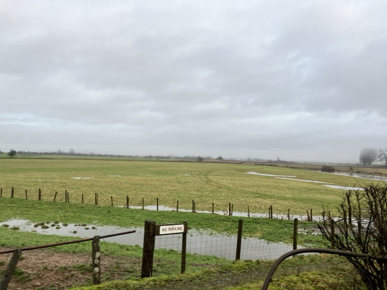
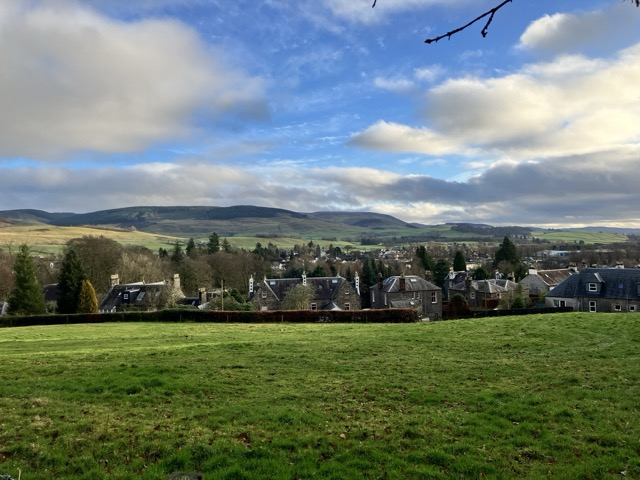

Since the summer of last year, I have wanted to create a project a bit like the DotML. The premise is simple - every single day of the year I will do two things towards it. I will take a photograph and write a short text description or contextual piece in one sentence. You might have heard of the application "BeReal", which I suppose this project is quite similar to, with the exception being that the purpose here is to contribute towards a personal project of documentation, rather than for any social purposes. Whatever I am doing on a particular day, whatever the weather, I will be attempting to contribute to the project.
January 14th: A wonderful blue sky over Newcastle today
January 13th: The spring is beginning to spring at Wallington, Northumberland!

January 12th: Fenham Hall

January 11th: Yes, I... may have forgotten to take a photo again. Still getting used to this! I have been playing around with using Krita for photo editing today though, so enjoy some of my efforts.

January 10th: Finally, some lovely blue sky
January 9th: The Roman Wall
January 8th: Another first! I forgot to take a photo, but I've mostly been doing music today anyway, so here's a photo of the session I'm working on.
January 7th: A first for the year: a flower! It's a hellebore

January 6th: The Flying Scotsman!! I even got to go inside, rather exciting stuff

January 5th: Looking up from the position of what would have been South Gosforth Farm, towards St Nicholas' church, Newcastle.

January 4th: St. Bartholomew's Church, (Long)Benton; found whilst on a walk looking for buildings as seen on old maps.
January 3rd: The (rather full) Ouseburn, as seen from Armstrong Bridge
January 2nd: A rather full River Annan near Lockerbie
January 1st: Looking down over Moffat, Scotland from the hill at the back